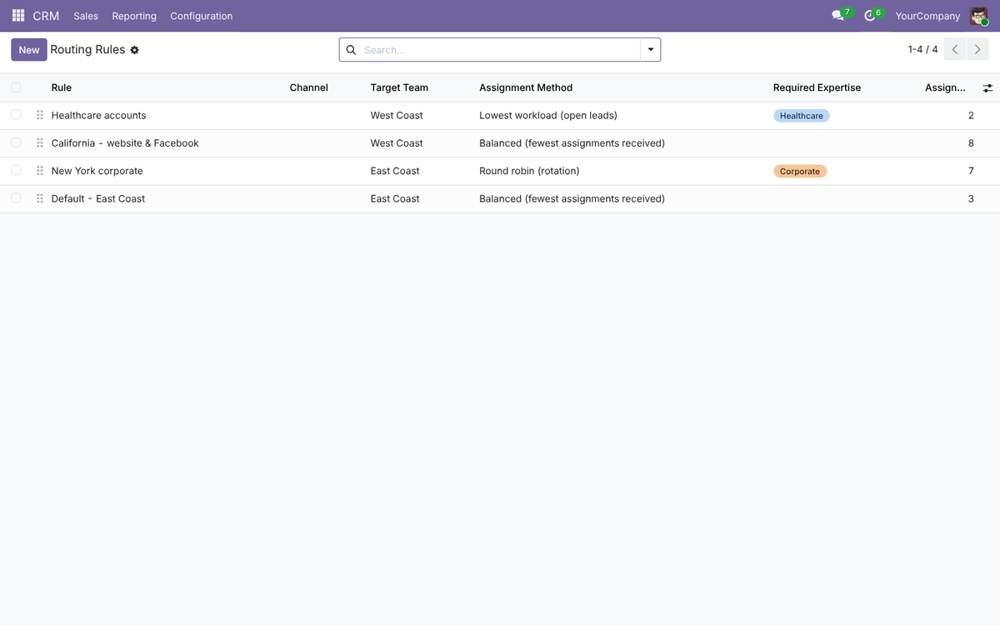
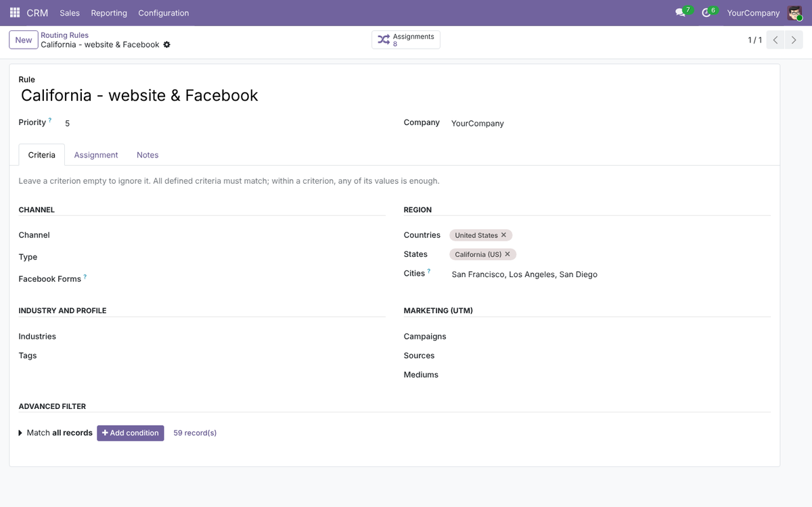
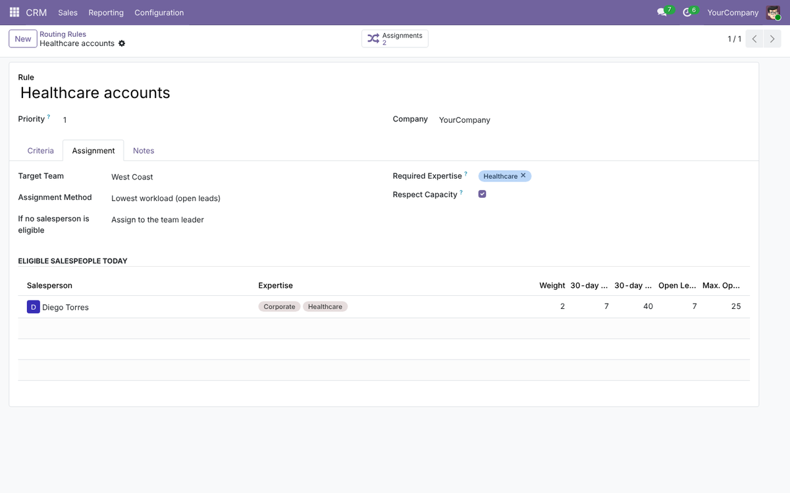
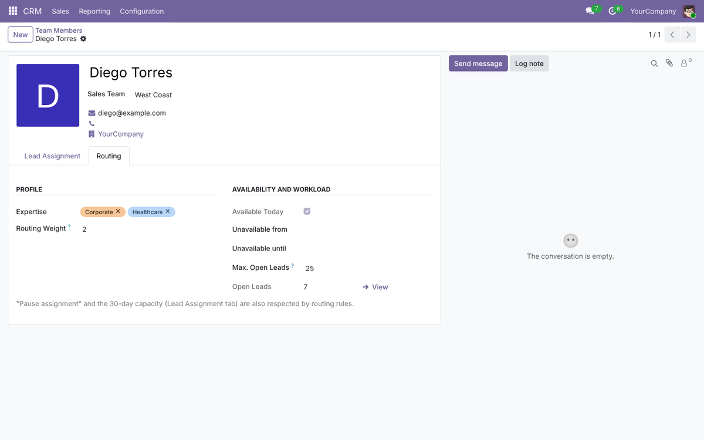
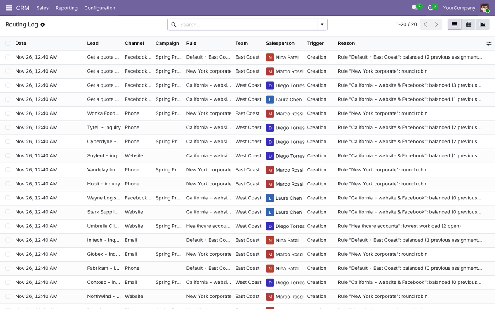
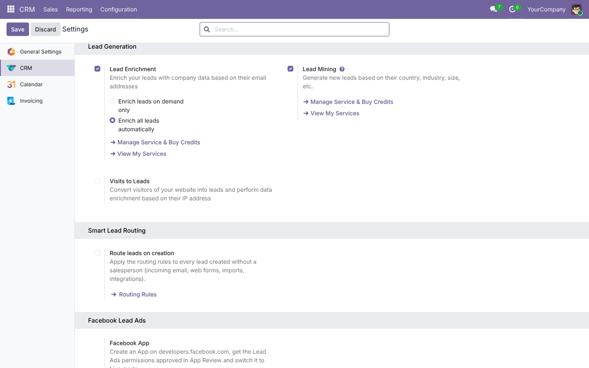

Routing rules
Order rules by drag and drop. A rule without criteria at the end of the list works as the default rule.

Criteria
Empty criteria are ignored. All defined criteria must match; within a criterion, any of its values is enough. City matching is case and accent insensitive.

Assignment
Choose the target team and the method, require expertise and capacity, and decide what happens when nobody is eligible. The rule shows who is eligible today.

Salespeople and availability
Each team member gets a Routing tab with expertise, weight, absence dates and a maximum of open leads.

Routing log
Every assignment is logged with its rule, team, previous and new salesperson, trigger and reason. Analyze it in list, pivot and graph views.

On the lead
Use the Route button or the Route action on several leads from the list. The Routing tab shows the inbound channel, the industry, the applied rule and the history.

Automatic routing
Enable Route leads on creation in CRM settings to route every lead created without a salesperson: incoming emails, web forms, imports and integrations.
